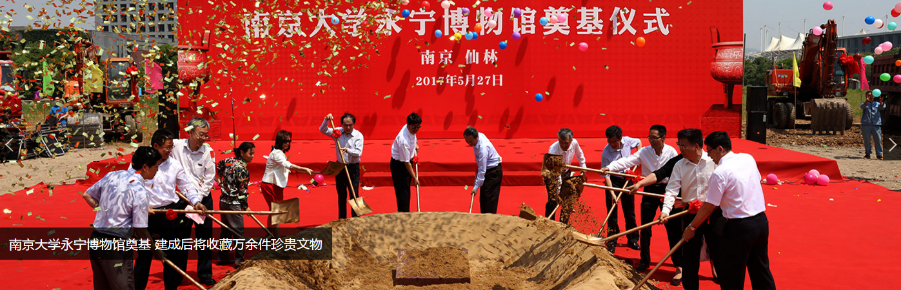
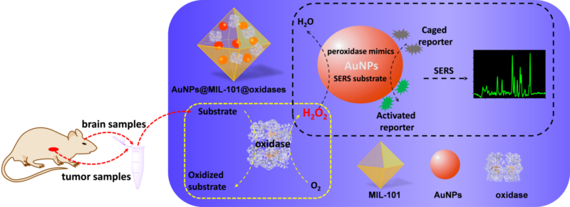
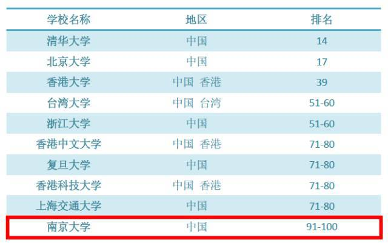

南大新闻

- 南京大学卢山教授在植物代谢调控研究取得重要进展
- 2017-06-13 2017年6月12日，美国肯恩大学校长达伍德·法拉希一行访问我校，濮励杰校长助理会见客人一行。省外办副主任周暐及美大处代表，我校中美中心和国际处代表等参加会见。濮励杰向客人介绍了我校的历史发展，并表示法拉希校...

-
南京大学举行2017年校园开放日系列活动
- 2017-06-11 6月10日下午，南京大学2017年自主招生笔试开考，来自全国31个省（区、市）的千余名考生参加了当天考试。为做好考生和家长服务工作，校办、宣传、学工、教务、保卫、电教、后勤等部门通力合作，献上了一场别致而温情...